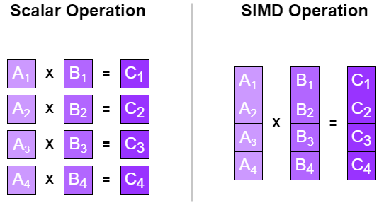
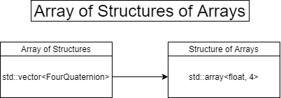
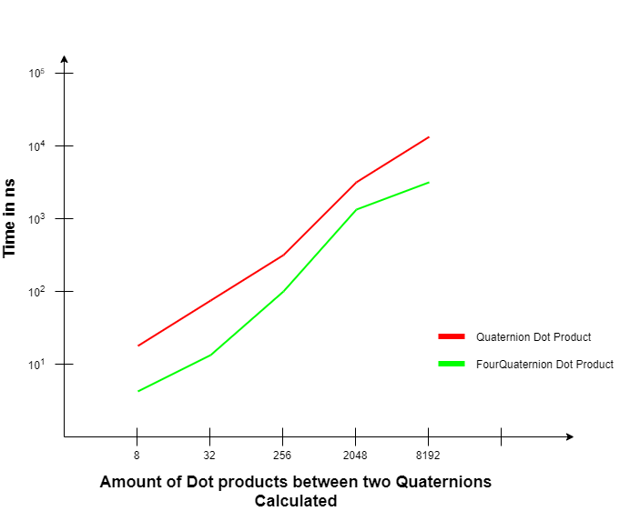

Introduction
During my studies at SAE Institute of Geneva in the Games Programming section, I worked on a custom game engine as part of a two-person team. This article presents an optimization I implemented using Intel Intrinsics to significantly improve quaternion performance.
Understanding Quaternions
Quaternions are used to represent rotations in 3D space. Based on complex numbers, they aren't intuitive to understand, but they're essential in game development. One of the main reasons we use quaternions is to avoid gimbal lock - the loss of one degree of freedom in rotation.
3 Axes Gimbal Rotation

Gimbal Lock Problem

My task was to optimize quaternion operations as much as possible, so I decided to use Intel Intrinsics functions to achieve this.
Basic Quaternion Implementation
The basic implementation of quaternions looks like this:
struct Quaternion
{
float x; //4 bytes
float y; //4 bytes
float z; //4 bytes
float w; //4 bytes
};
static float Dot(const Quaternion& a, const Quaternion& b)
{
return a.x * b.x +
a.y * b.y +
a.z * b.z +
a.w * b.w;
}The quaternion contains 4 floats representing each value, and the Dot function calculates the dot product by multiplying and summing corresponding components.
FourQuaternion Optimization
To optimize the code, I created a new struct called FourQuaternion. Instead of doing calculations 4 times with different quaternions, we do it once by aligning values. We use 4 floats because they total 16 bytes - exactly what an XMM register can hold.
struct alignas(4 * sizeof(float)) FourQuaternion
{
std::array<float, 4> x; //16 bytes
std::array<float, 4> y; //16 bytes
std::array<float, 4> z; //16 bytes
std::array<float, 4> w; //16 bytes
};Array of Structures of Arrays (AoSoA)
I approached the problem by creating an AoSoA system. Structures of Arrays separate elements into one parallel array per field, making it easier to pack them into SIMD instructions.

The reason SoA is better here is because values are aligned in memory, making it faster to load all values in one block instead of accessing each individually:
- AoS Alignment: xyzwxyzwxyzwxyzw
- SoA Alignment: xxxxyyyyzzzzwwww

Intel Intrinsics Implementation
Intel Intrinsics are C-style functions that provide access to Intel instructions without writing assembly code. Here's the optimized Dot function:
static inline std::array<float, 4> Dot(const FourQuat& q1, const FourQuat& q2)
{
alignas(4 * sizeof(float)) std::array<float, 4> result;
auto x1 = _mm_load_ps(q1.x.data());
auto y1 = _mm_load_ps(q1.y.data());
auto z1 = _mm_load_ps(q1.z.data());
auto w1 = _mm_load_ps(q1.w.data());
auto x2 = _mm_load_ps(q2.x.data());
auto y2 = _mm_load_ps(q2.y.data());
auto z2 = _mm_load_ps(q2.z.data());
auto w2 = _mm_load_ps(q2.w.data());
x1 = _mm_mul_ps(x1, x2);
y1 = _mm_mul_ps(y1, y2);
z1 = _mm_mul_ps(z1, z2);
w1 = _mm_mul_ps(w1, w2);
x1 = _mm_add_ps(x1, y1);
z1 = _mm_add_ps(z1, w1);
x1 = _mm_add_ps(x1, z1);
_mm_store_ps(result.data(), x1);
return result;
}Intel Intrinsics Functions Explained
ps - Packed single-precision floating-points (4 × 32-bit floats as a 128-bit value)
_mm_load_ps() - Loads 16 bytes from memory (4 aligned floats)
_mm_mul_ps() - Multiplies 4 floats with 4 other floats simultaneously
_mm_add_ps() - Adds 4 floats with 4 other floats simultaneously
_mm_store_ps() - Stores the result back to memory
Performance Results
I created a test that calculates the Dot product of n quaternions using the MSVC compiler with an Intel Core i7 CPU on Windows 10:

3-4x Performance Improvement
The FourQuaternion Dot product is between 3 and 4 times faster than the standard Quaternion Dot product - a significant optimization for real-time applications.
Analysis on Godbolt showed the key difference: the standard Quaternion Dot function used jumps and movss (32-bit), while the FourQuaternion version used movaps (128-bit) with no jumps - confirming proper Intel Intrinsics usage.
Lessons Learned
- First experience with low-level SIMD optimization
- Understanding AoSoA data layouts for cache efficiency
- Learning Intel Intrinsics and their mapping to assembly
- Analyzing compiler output to verify optimizations
Resources
Visualizing Quaternions
An excellent interactive resource for understanding quaternions visually.
Visualizing Quaternions